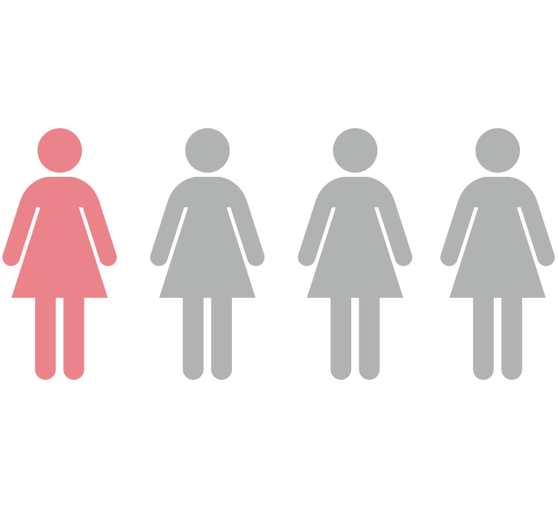

A flacidez vaginal afeta quase ¼ de todas as mulheres que já deram à luz

É um procedimento realizado com a tecnologia Smoth do laser Fotona. É produzido um calor capaz de estimular a produção de colágeno. O tratamento também fortalece os tecidos da região íntima. O Intimalase pode melhorar o prazer durante o ato sexual. Desta forma, contribui positivamente para a qualidade de vida das mulheres.